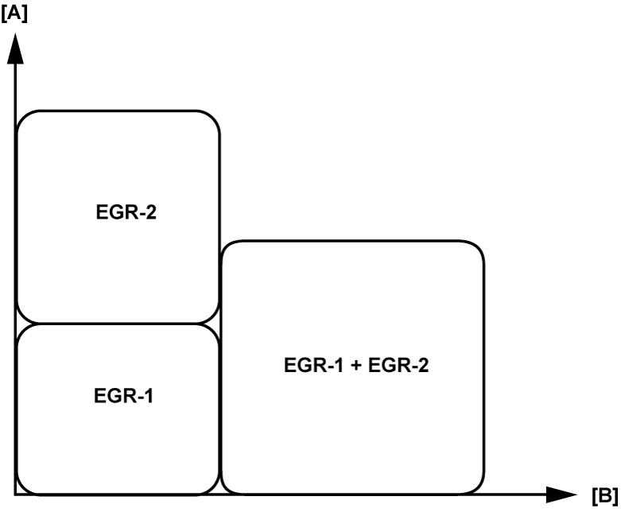

1B
| EGR System Description |
EGR system of this vehicle is equipped with dual EGR i.e. conventional high-pressure system (EGR-1) and newly adopted low-pressure system (EGR-2).
EGR-1 recirculates high temperature and high pressure exhaust gas from exhaust manifold, upstream of catalytic converter, to intake manifold and can work with good response. Further, vapor in the recirculated gas is not easily condensed into water and, with this feature, the system functions even if the ambient temperature is very low.
EGR-2 recirculates low pressure exhaust gas from downstream of DPF® to turbocharger air inlet. Therefore, the recirculated gas is clean with few PM and functions in wide range of the engine condition. Further, the gas in this EGR-2 is cooled passing the EGR cooler and improves the turbocharger efficiency and intake air charging efficiency in the result.
Selective use of the EGR-1 or EGR-2, or a combination of the EGR-1 and EGR-2 corresponding to the driving conditions enables the recirculated gas to function effectively improving the emission level and fuel efficiency with good response in any conditions.
Example of dual EGR operation range

 "Expand image")
| [A]: | Engine speed | [B]: | Injection quantity |